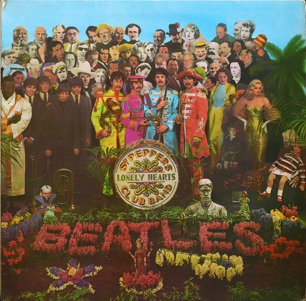

The Beatles
Don't Let Me Down
The Famous Rooftop Concert - January 30, 1969
Roof of Apple Corps at 3 Savile Row
Roof of Apple Corps at 3 Savile Row
I've Got a Feeling
Albums to Check Out

Abbey Road (1969)
Let It Be (1970)
Sgt. Pepper's Lonely Hearts Club Band (1967)

The White Album (1968)